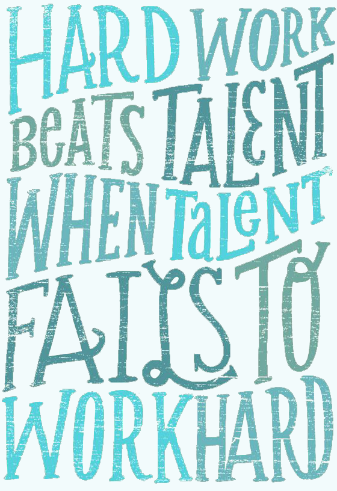

Introduction of Myself
I am currently enrolled in the Software Engineering Technology program at Centennial College, at their Progress Campus. Before that, I attended 2 years at the University of Toronto (UofT) in the Computer Science - Software Engineering program, at their Scarborough campus. I plan to return to UofT in the future to complete my BComputer Science bachelor's degree once I've integrated myself into the workforce thanks to a Centennial College degree.
As a full-time student life can be very stressful when dealing with course work and maintaining your personal life. Whenever I feel as though I can't take it anymore, I'm reminded to myself of what Kobe Bryant, an NBA player, once said:
Favourite Activites of Mine
- Creating artistic projects using Adobe Creative Suite applications
- Reading thought-provoking books during the daily commute to Centennial College
- Self-learning Russian as a second language
- Napping for 10 minutes during the day whenever feeling exhausted
- Thinking silently while attempting to solve a complex coding problem
- Waking up at 4 AM every day to get a head start on the current day's tasks